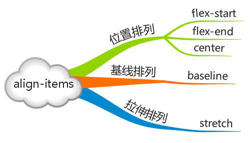
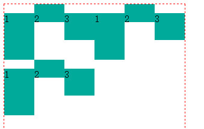
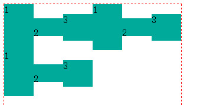
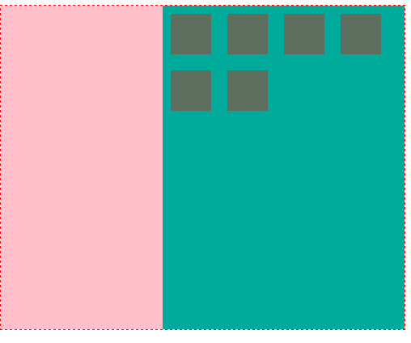

概念
Flex 是 Flexible Box 的缩写，意为”弹性布局”，用来为盒状模型提供最大的灵活性。传统的布局，基于盒状模型，依赖display属性 + position属性 + float属性。它对于那些特殊布局非常不方便，比如，垂直居中就不容易实现。于是乎2009年，W3C提出了Flex布局，可以简便、完整、响应式地实现各种页面布局。
首先采用Flex布局的元素，称为Flex容器（flex container），简称”容器”。它的所有子元素自动成为容器成员，称为Flex项目（flex item），简称”项目”。
容器默认存在两根轴：水平的主轴（main axis）和垂直的交叉轴（cross axis）。主轴的开始位置（与边框的交叉点）叫做main start，结束位置叫做main end；交叉轴的开始位置叫做cross start，结束位置叫做cross end。项目默认沿主轴排列。单个项目占据的主轴空间叫做main size，占据的交叉轴空间叫做cross size。

语法
声明为flex布局
.box{
display: flex;
/*Webkit 内核的浏览器，必须加上-webkit前缀*/
display: -webkit-flex;
}
/*也可以设置为行内的flex属性*/
.box{
display: inline-flex;
}
注意，设为Flex布局以后，子元素的float、clear和vertical-align属性将失效。

flex容器的属性
-
flex-direction
决定主轴的方向（即项目的排列方向），相对的另外一条轴就是交叉轴
取值：row（默认）主轴为水平方向，起点在左端，row-reverse，column，column-reverse
-
flex-wrap
默认情况下，项目都排在一条线（又称”轴线”）上。flex-wrap属性定义，如果一条轴线排不下，如何换行。
取值：nowrap（影响到项目的宽度），wrap， wrap-reverse（超出的换到上面）
-
flex-flow
flex-flow属性是flex-direction属性和flex-wrap属性的简写形式，默认值为row nowrap。
flex-flow: row nowrap -
justify-content
定义了项目在主轴上的对齐方式
取值：flex-start，flex-end，center，space-between，space-around
-
align-items
定义项目在交叉轴上如何对齐
取值：flex-start，flex-end，center，baseline，stretch(子容器沿交叉轴方向的尺寸拉伸至与父容器一致)

这里的baseline默认是指首行文字，下图中2号格子设置了paddingTop，可以看出效果

取值为center时

上面的属性只是针对一个主轴时，即只有一行，一行的所有元素在交叉轴上的排列时的范围是父元素的高度，当有多行即多个主轴时，按照行分派高度，每行的项目的活动范围是所在行分配到的高度
-
align-content
当有多个主轴即多行时每行之间的对齐效果
取值：flex-start，flex-end，center，space-between，space-around，stretch
flex项目的属性
-
order
定义项目的排列顺序。数值越小，排列越靠前，默认为0
-
flex-grow
定义项目的放大比例，默认为0，即如果存在剩余空间，也不放大，width属性将会失效
如果所有项目的flex-grow属性都相等，则它们将等分剩余空间（如果有的话）。如果一个项目的flex-grow属性为2，其他项目都为1，则前者占据的剩余空间将比其他项多一倍。
-
flex-shrink
定义了项目的缩小比例，默认为1，即如果空间不足，该项目将缩小，当设置flex-wrap为nowrap时效果就出来了
如果所有项目的flex-shrink属性都为1，当空间不足时，都将等比例缩小。如果一个项目的flex-shrink属性为0，其他项目都为1，则空间不足时，前者不缩小。负值对该属性无效
-
flex-basis
项目占据的主轴空间（main size），它的默认值为auto，即项目的本来大小。浏览器根据这个属性，计算主轴是否有多余空间
取值为auto或者长度值
-
flex
flex属性是flex-grow, flex-shrink 和 flex-basis的简写，默认值为0 1 auto。后两个属性可选
-
align-self
align-self属性允许单个项目有与其他项目不一样的对齐方式，可覆盖align-items属性。默认值为auto，表示继承父元素的align-items属性，如果没有父元素，则等同于stretch。
取值：auto，flex-start，flex-end，center，baseline，stretch
实例
左侧固定宽度，右侧宽度随浏览器宽度自动改变，右侧内部方格大固定，会自动换行

#main{
border: 1px dashed red;
width: 100%;
height: 400px;
display: flex;
flex-flow: row nowrap;
justify-content: flex-start;
align-items: stretch;
}
#left{
flex-basis: 100px;
flex-shrink: 0;
background: pink;
}
#right{
flex-grow: 1;
flex-shrink: 1;
background-color: #00aa9a;
display: inline-flex;
flex-flow: row wrap;
align-content: flex-start;
}
#right div{
background-color: #5e6e5e;
margin: 10px;
flex-basis: 50px;
flex-shrink: 0;
height: 50px;
}